https://goo.gl/CocEBN
https://goo.gl/aC8X6W
https://goo.gl/rq43ng
https://goo.gl/zdFGN5
https://goo.gl/sHWWqK
https://goo.gl/nQpZGW
https://goo.gl/Mm1HMP
https://goo.gl/jUQuF6
https://goo.gl/ASZjmz
https://goo.gl/JJ4HL2
https://goo.gl/HaKfna
https://goo.gl/2P4nTe
https://www.jstage.jst.go.jp/article/jnsv/66/Supplement/66_S
283/_pdf#:~:text=This%20means%20that%20the%20fly's,an%20antibiotic)%20(9).
https://seekersguidance.org/answers/general-counsel/does-modern-science-confirm-the-hadith-that-says-there-is-an-antidote-in-the-wing-of-a-fly/


Right wing has much higher intensity / concentration of inhibitor species
https://www.hindawi.com/journals/vmi/2022/9346791/tab1/
https://www.hindawi.com/journals/vmi/2022/9346791/
https://www.researchgate.net/publication/358641649_Tracking_The_Source_of_Antimicrobial_Production_From_House_Fly_Musca_domestica_Right-Wing_of_Fly_Or_Gut_System_-_A_Mini-Review
https://www.researchgate.net/figure/The-type-of-bacteria-found-on-the-wings-of-flies-M-domestica_tbl1_358641649
https://www.ncbi.nlm.nih.gov/pmc/articles/PMC9822767/
"B. subtilis isolated from the right wing and body surface of M. domestica effectively inhibited the growth of Pseudomonas spp. B. subtilis plays an important role in the production of antibiotics, enzymes, and other secondary metabolites"
This quote confirms that B. subtilis isolated from the right wing and body surface of Musca domestica has been found to inhibit the growth of Pseudomonas spp., demonstrating its antimicrobial potential.
inhibited means to stop
Pseudomonas spp. B. is a bacteria.
In other words, the right wing has antimicrobial activity
https://www.icraa.org/the-hadith-of-the-fly-muslim-perspectives-on-scientific-assessment/
it has been very well demonstrated how house flies contain bacteria that have antimicrobial activity against pathogens that cause diseases in humans. So the dipping the fly as a neutralizer is completely scientifically possible
Refer to the following study:https://www.hindawi.com/journals/vmi/2022/9346791/
this is a peer-reviewed study[1] published in the Journal of Veterinary Medicine International[2], funded by the Ministry of Education, Culture, Research, and Technology, Republic of a country with 300 million + people.[3]
Now refer to the following table from the study👇 https://www.hindawi.com/journals/vmi/2022/9346791/
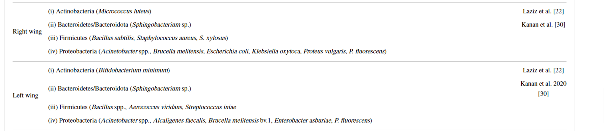
These are the bacteria found on each wing
let's examine
With purple are marked are the bacteria that have an antimicrobial activity against pathogens
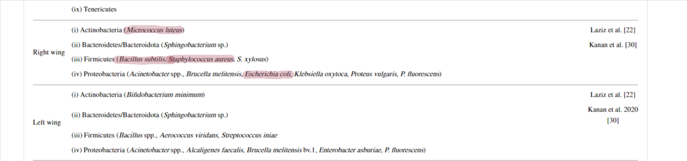
as you see, they are predominately on the right wing, Esp. the bacteria like Micrococcus luteus and Bacillus subtilis that are described as having strong effect against pathogens.
The criteria for proving this hadith is to find if the right wing can potentially heal/eliminate the pathogens found in the other/ left wing.
let's see examine some pathogens found in the left.....
Streptococcus iniae
Streptococcus iniae is complete pathogen, even a virus. It is know that it causes serious diseases in humans.
this is a study confirming 👇
https://www.ncbi.nlm.nih.gov/pmc/articles/PMC105023/
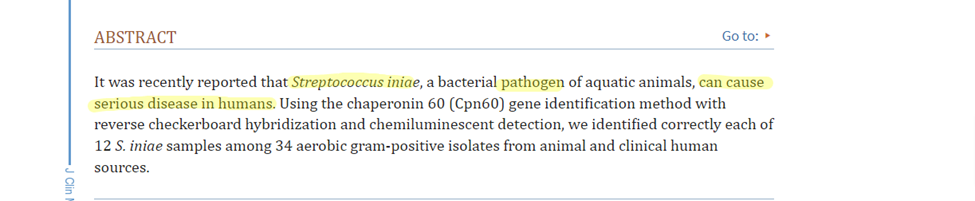
Pseudomonas fluorescens
Pseudomonas fluorescens also can cause disease or illnesses
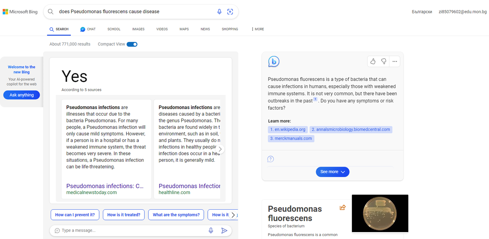
as you see, both are presented on the left wing
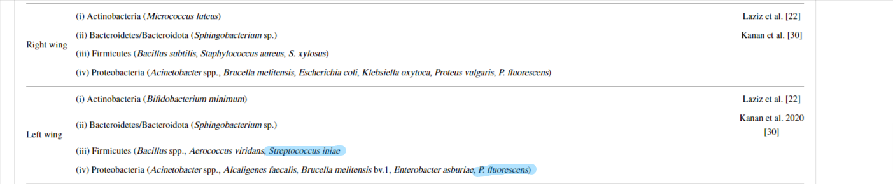
now let's look at this bacteria from the right wing
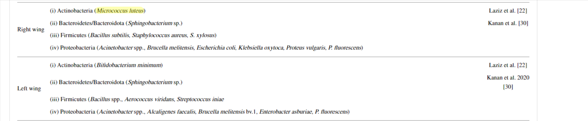
Micrococcus luteus is described to have strong antimicrobial activity against bacteria.
https://www.sciencedirect.com/topics/medicine-and-dentistry/micrococcus-luteus
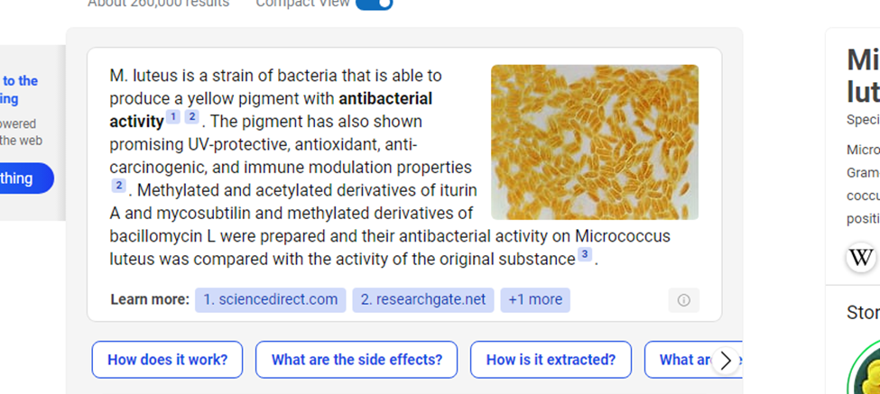
Now let’s examine the specific pathogens it can cure 👇
https://www.sciencedirect.com/science/article/pii/S0976120913000466
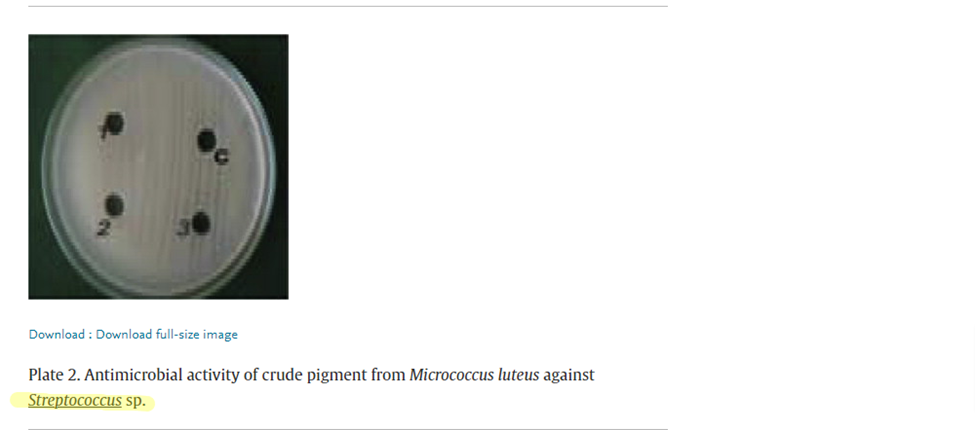
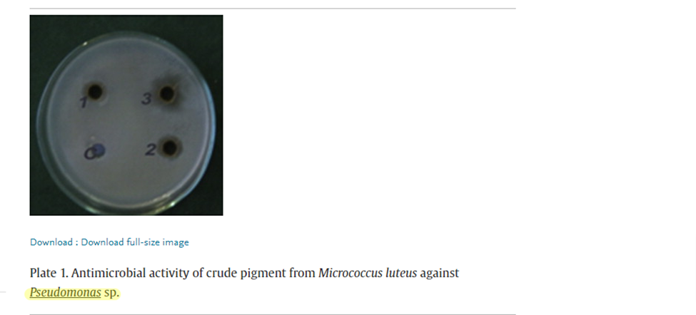
So, It has an anti-microbial effect against Streptococcus species and Pseudomo-nas species.
(sp. means species)
pathogen from the Streptococcus is Streptococcus iniae found in the left wing
pathogen from the Pseudomonas is Pseudomonas fluorescens found also on the left wing
so Micrococcus luteus from the right wing has an effect against Streptococcus iniae and Pseudomonas fluorescens which are found in the left
hmm, this was exactly the criteria to proving this hadith
P1. Healing from pathogens means eliminating them(this is how modern medicine works, it removes the certain pathogens,illness,ect..)
P2. Micrococcus luteus can eliminate Streptococcus species, such as Streptococcus iniae and Pseudomonas species, such as Pseudomonas fluorescent
C: Micrococcus luteus found in the right wing is considered a healing from such pathogens in the left wing
Bacillus subtilis
"Bacillus subtilis is able to produce more than two dozen antibiotics with an amazing variety of structures. The produced anti‐microbial active compounds include predominantly peptides that are either ribosomally synthesized and post‐translationally modified..."
https://onlinelibrary.wiley.com/doi/full/10.1111/j.1365-2958.2005.04587.x
https://pubmed.ncbi.nlm.nih.gov/15853875/
another bacteria besides Micrococcus luteus that has strong anti microbial activity against pathogens presented on the right wing
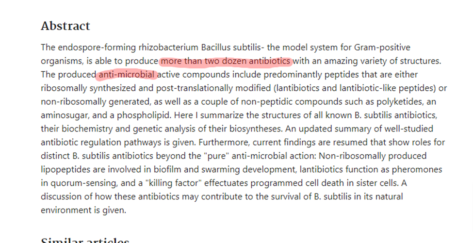
https://www.ncbi.nlm.nih.gov/pmc/articles/PMC9822767/
"B. subtilis isolated from the right wing and body surface of M. domestica effectively inhibited the growth of Pseudomonas spp. B. subtilis plays an important role in the production of antibiotics, enzymes, and other secondary metabolites"
This quote confirms that B. subtilis isolated from the right wing and body surface of Musca domestica has been found to inhibit the growth of Pseudomonas spp., demonstrating its antimicrobial potential.
Bacillus subtilis produces antibiotics such as bacitracin and polymyxin, which are known to be effective against a range of Gram-positive bacteria which is half of the bad bacteria on the left
for the other sources of the bacteria find it urself bcz im tired
bacteria found in the diff parts of the fly - right/left wing, Body surfaces, Digestive tract,ect.. of the fly
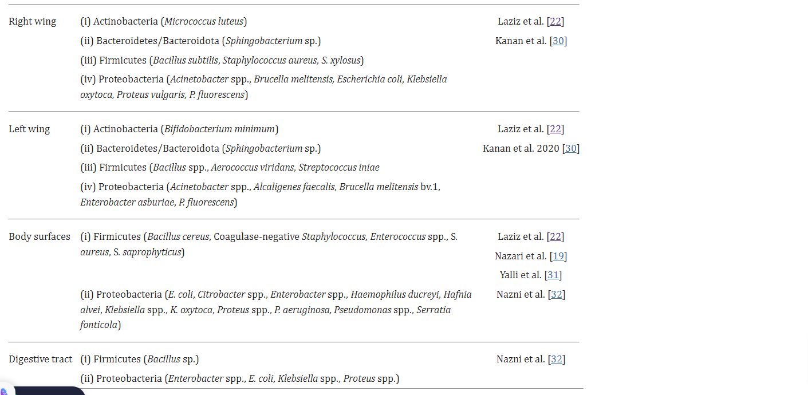
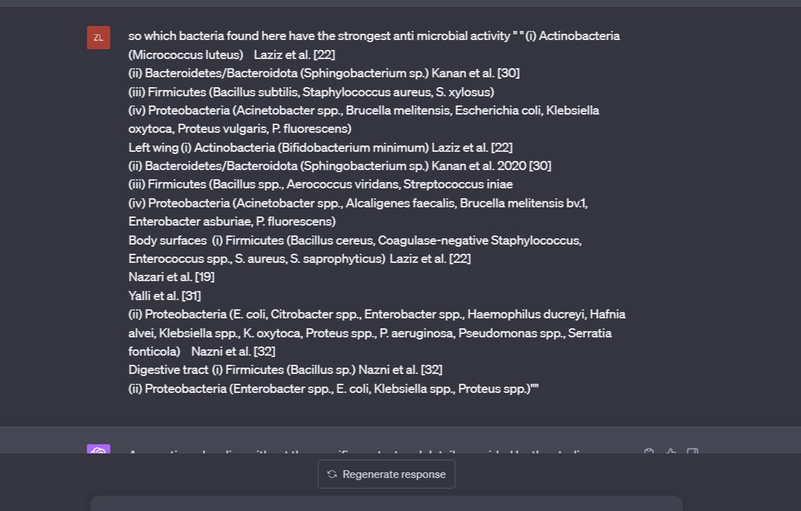
which bacteria extracted from the diff body parts of a fly are the ones which have anti-microbial activity pathogens? 🧐 hmm
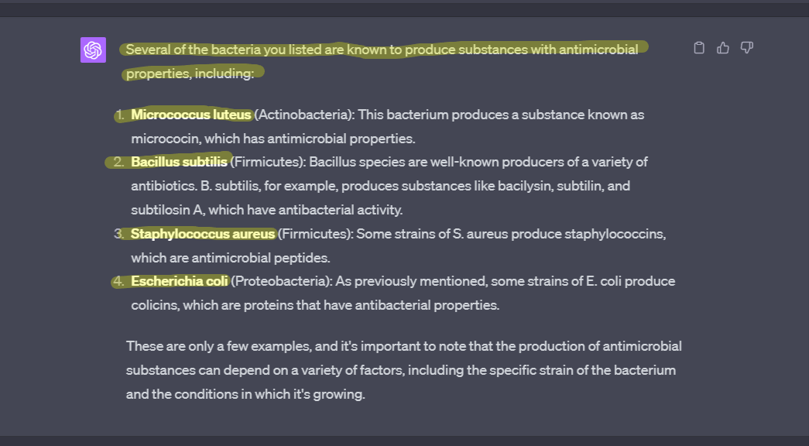
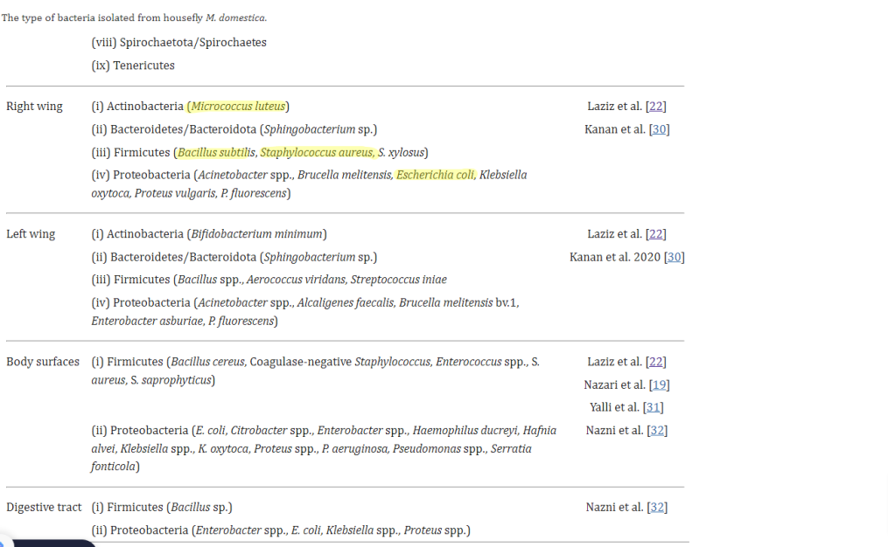
wait, arent they only presented in the right-wing? Yes, they are presented in the right wing. Moreover, Micrococcus luteus and Bacillus subtilis which are described by the sources ive shown as the strongest anti microbal effect against pathogens, guess what. They are only presented in the right wing, in other parts they are not presented.
and as for the final can the left-wing cure the right wing?
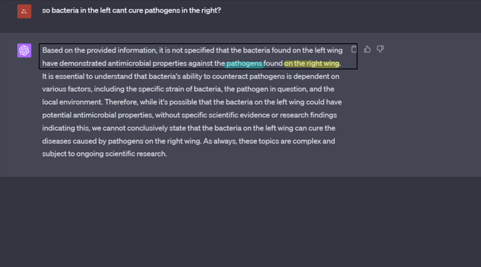
what about the right ?
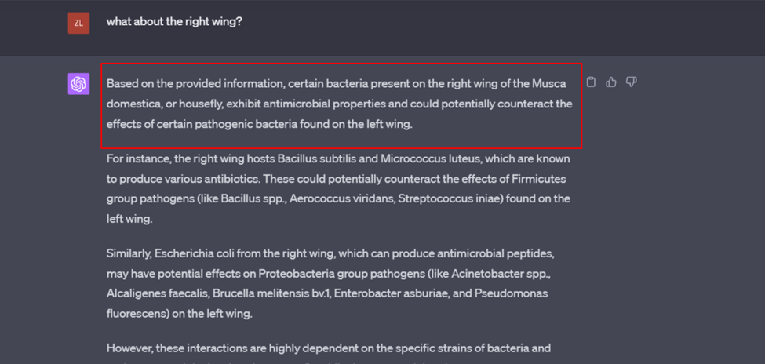
conclusion
Flies carry many bacteria including pathogens and bacteria that can fight these pathogens. From all the bacteria gathered in different parts of the fly. Micrococcus luteus,Bacillus subtilis, Staphylococcus aureus, and Escherichia coli which out of these bacteria are the ones that fight against pathogens are found in the right wing(esp Micrococcus luteus and Bacillus subtilis which are found only in the right-wing of all parts of the fly, they have a very strong effect against pathogens as i have shown)
all these bacteria are only presented in the right wing, they are not found in the left wing